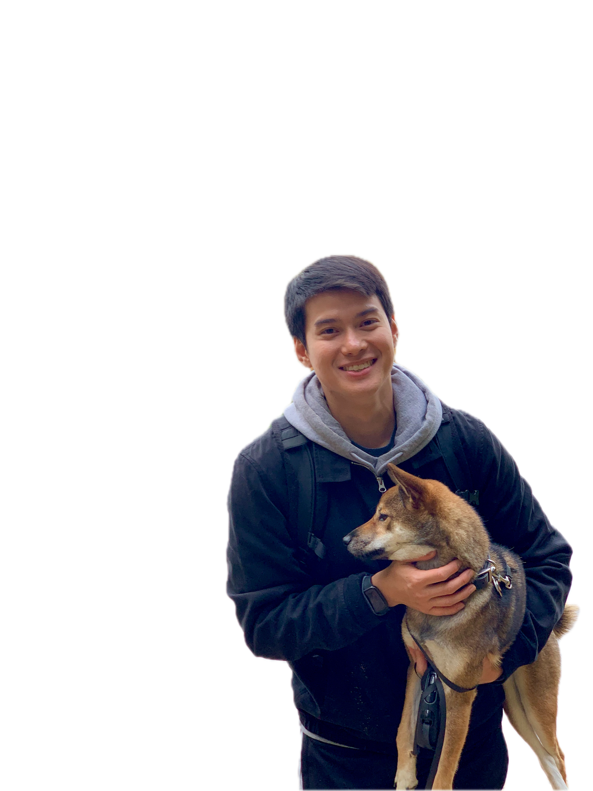

English • Korean • Vietnamese
I investigate problems, improve workflows, and help teams work more effectively.
Finding root causes. Improving processes.
Helping teams work smarter.

Remote Technical Support Specialist with experience troubleshooting complex issues, improving support processes, and creating documentation that helps teams work more efficiently. Known for identifying root causes, solving challenging problems, and supporting colleagues through knowledge sharing and process improvement. Fluent in English, Korean, and Vietnamese, with a strong focus on accuracy, continuous improvement, and independent problem solving.
Identified a discrepancy between customer-facing and internal claim data, partnered with IT to investigate the issue, and helped drive resolution.
Discovered duplicate complaint communications between departments due to unclear workflow ownership and helped identify a more efficient process.
Created step-by-step guides and regularly assisted teammates with complex workflows, improving consistency and knowledge sharing.